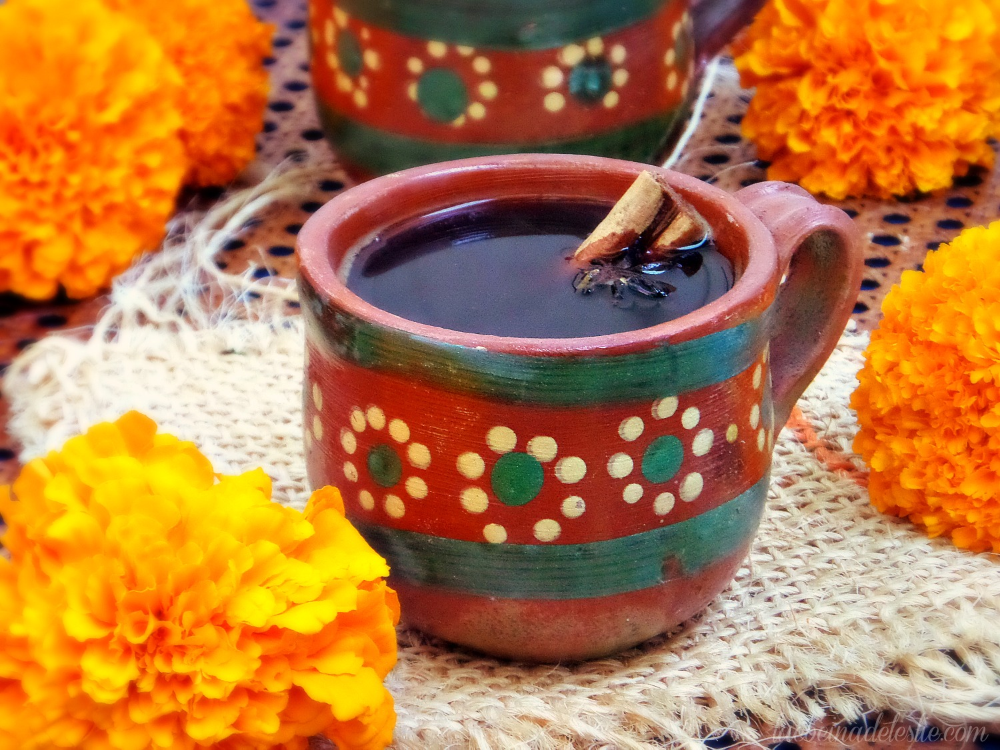

Cafe de Olla

This is also known as Cafe de Olla, from the style of clay pots
and mugs that are used to make it.
Ingredients :
- 32 ounces of water (enough for 4 cups)
- 1/2 cup ground coffee, medium to dark roast
- 3 ounces of piloncillo, or dark brown sugar
- 1 stick of cinnamon
- 1/2 peel of orange rind
- 1 clove (optional)
- 1 star anise (this too is optional)
- Pour water into a suitable pot, adding to it the cinnamon, sugar, orange rind, and any other additional spices.
Place over a medium-high heat until the water comes to a gentle boil and the sugar is dissolved
- Once the sugar has dissolved, stir in the ground coffee and remove from the pot from the heat.
Cover with a lid and let it sit for about 5 minutes
- Once it has finished steeping, strain the coffee from the loose elements, pour into your cup and enjoy!
Serves 4
Home